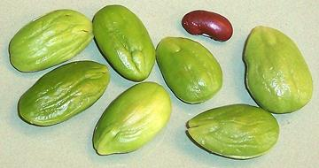
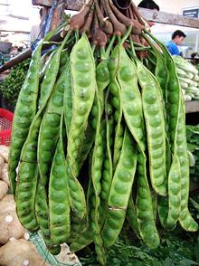

Sataw Bean

[Twisted Cluster Bean, Stink Bean, Peteh (Indonesia), Petai (Malaysia),
Sa-taw / Sator (Thai), Nejire-fusamame (Japan), Yongchaak,
Parkia speciosa]
These beans, about the size and shape of large almonds, grow on large
Southeast Asian trees in clusters of long twisted flat pods - about 16
beans per pod. Their taste is often described as "medicinal", but actually
it's more like rubber cement - particularly the rubber cement we used to
patch inner tubes with back when tires had tubes. They are quite popular
in Southern Thailand, Burma, Malaysia and Indonesia where the taste for
them has been acquired.
Very young pods are eaten as a vegetable in areas where the trees grow.
In northeastern India mature beans are dried for later use and will then
be black in color.
More on Beans, Peas and Lentils
(large page)

Buying & Storing:
Mature beans shelled
from the pod can be found in small trays in the frozen food section of
well stocked markets serving Southeast Asian communities.
Photo by Midori distributed under license
Creative Commons
Attribution-ShareAlike v3.0 Unported.
Cooking:
For curries and the like, I usually put the
beans in so they'll cook for 1/2 hour or so which will temper the flavor
of the beans and lightly flavor the curry. They soften a bit but remain
intact.
Subst:
The only reasonable substitute is Mexican
Guajes or Huajes, which
have a similar taste, but are much smaller and a bit milder. Beyond this
there are only "place holders", large fresh fava or lima beans - not
at all the same flavor, but at least they're large green beans, and may
actually be more acceptable to the uninitiated.
bp_satawz 081224 - www.clovegarden.com
©Andrew Grygus - agryg@clovegarden.com - Photos
on this page not otherwise credited © cg1
- Linking to and non-commercial use of this page permitted